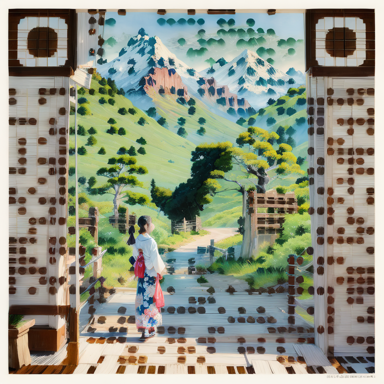

F.Balemba
Homepage:🏠🍂
🔧Welcome to this work in progress webpage.👋
Who am i:👨🏾💻
My name is Freud Balemba I'm currently a student at HZ University of Applied Sciences.
I'm excited to learn how to program because i got multiple projects that i like to make. im exited to get the opportunity to learn how to make programs.
I have a deep passion for ICT, and I love exploring all the different ways technology can shape our future.
I’m eager to take on new challenges, dive into projects, and expand my knowledge in the field of tech.
From coding to networking to AI development i like to study and create, thats why i like to learn more about software development and more.
I’m fascinated by how different aspects of ICT comes together to reshape the world.
List of projects done:💾
- AI voice training.
- AI chat bot and text to speech.
- AI image transformation.
- AI pc automation.
- Turing Test AI vs Human Quiz.
- Neural Radiance Fields using Instant-NGP.
- Product testing and Bug reporting for sillytavern AI.
- And much more.
This is a video of a Neural radiance field made by me.
This is a example of a project i worked on NeRF: Neural Radiance Fields - NeRF to Digital Twin Workflow.
This is a image of a NeRF Fox that i turned into a 3D Blender model made by me during my internship at the HZ.
A NeRF is a Neural Radiance Field its a type of neural network used in computer vision and graphics to generate highly realistic 3D scenes from 2D images.
It works by learning how light (or "radiance") behaves in a 3D space based on a collection of 2D images taken from different viewpoints.
Made by F.Balemba a hz student following the course HBO-ICT
Youtube Link - to a drone gate animation made by F.Balemba